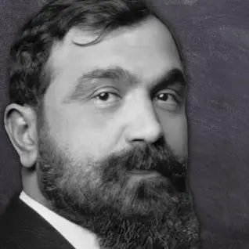

Fan S. Noli
Theofan Stilian Noli (İbriktepe, Vilayet of Edirne, January 6, 1882 - March 13, 1965, USA), known as Fan Noli, was a playwright, Orthodox cleric, politician, diplomat, man of literature, and musician.
As a man of literature, Noli wrote and translated a variety of texts from different genres and contributed to the journalism of his time as a director, editor, and writer in several periodicals. He began by translating dramas, then translated Sami Frashëri, Orthodox religious texts, and major works of world literature by Shakespeare, Khayyam, and Cervantes.
Biography
Theofanes Stylianos Mavromatis (akaFan Stylian Noli) is one of the greatest, highest achieving figures in Albanian history. Although his life is impossible to summarize in a short paragraph, below we will list some significant events from his life.
Short summary:- January 6th, 1882 - Theofan Stylianos Mavromatis, later known as Fan Noli, was born in the Albanian-speaking village of İbriktepe, Vilayet of Edirne..
- His family maintained Albanian language, customs, and traditions in the predominantly Albanian region.
- Noli’s father was a chanter in the local Orthodox church, and his mother was a housewife. Noli had a delayed start to education due to illness and initially attended Greek primary school, then a Greek high school in Edirne.
- 1900 - he moved to Greece, worked various jobs, and attended the University of Athens while participating in theater.
- 1903 - Noli went to Egypt, taught Greek, and connected with Albanian National Renaissance activists, translating Sami Frashëri's work.
- 1906 Noli emigrated to the USA, worked in various jobs, and became deputy editor of the Albanian periodical “Kombi.”
- 1908 - He helped establish the Independent Albanian Orthodox Church in Boston in 1908 and was ordained a priest by the Russian Orthodox Church.
- 1912 - Noli graduated from Harvard University in 1912 and led the publication of “Dielli,” the voice of the Albanian community in Boston.
- 1920 - he secured Albania's membership in the League of Nations and served as a diplomat and member of the Albanian parliament.
- 1924 - During the June Revolution of 1924, Noli led a reformist government in Albania, but it was short-lived.
- 1930 - Noli went into exile, lived in various European countries, and eventually returned to the USA
- In the USA, Noli founded the weekly "Republika" and later pursued a degree in music from the New England Conservatory.
- He continued to lead the Albanian Orthodox Church and earned a PhD from Boston University with a dissertation on Skanderbeg.
- March 13, 1965 - Noli died, in Fort Lauderdale, Florida, and was buried in Boston; he is remembered for his literary and cultural contributions.